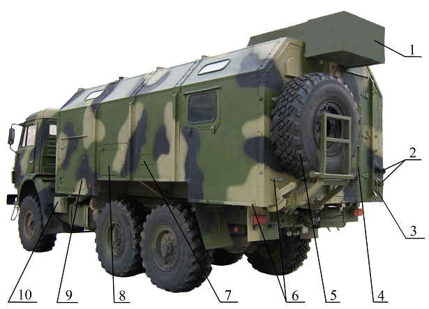
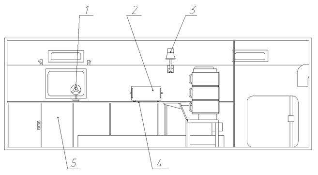

Назначение КПМ
Машина контрольно-проверочная 9В990 ЦТ2.009.040 предназначена для проведения регламентных проверок изделия 9М123.
КПМ 9В990 обеспечивает выполнение возложенных на нее функций в следующих условиях эксплуатации:
– в любое время года и суток и любых метеорологических условиях;– в интервале температур окружающего воздуха от 223 до 323 К (от минус 50 до плюс 50 °С);
– при относительной влажности воздуха до (95±3) % при температуре воздуха 298 К (+25 °С);
– на местности, расположенной на высоте до 3000 м над уровнем моря.
КПМ должна сохранять работоспособность после кратковременного пребывания (в течение 6 часов) при температурах 213 К (минус 60 °С) и 333 К (плюс 60 °С).
Технические характеристики КПМ
Основные технические характеристики КПМ приведены в таблице 1.
Таблица 1
| Наименование показателя | Значение | Примечание |
|---|---|---|
| Тип шасси | КАМАЗ–5350 | |
| Колесная формула | 6х6 | |
| Макс. скорость движения автомобиля, км/ч | 85 | |
| Контрольный расход топлива автомобилем на 100 км пути при скорости: 60 км/ч, л 80 км/ч, л |
24 27 |
|
| Объем топливных баков, л | 125; 170 | 2 бака |
| Наибольший угол преодолеваемого подъема автомобилем, град |
31 | |
| Тип кузова-фургона | К5350 | |
| Метод оценки исправности контролируемых изделий | Автоматизированный, параметрический, допусковый | |
| Форма предоставления результатов контроля | На световом табло ОТКАЗ, ГОДЕН, с индикацией значений измеренных параметров на 1И25-1 | |
| Производительность при контроле изделий 9М123, шт/ч | 20 | |
| Габариты КПМ в походном положении, мм: длина ширина высота |
8490 2900 3570 |
|
| Вписываемость в железнодорожный габарит по ГОСТ 9238-83 | 1-Т | |
| Масса КПМ, кг, не более: с расчетом без расчета |
12200 11800 |
|
| Распределение массы, кг: на переднюю ось на заднюю ось на левый борт на правый борт |
4750 7050 5910 5890 |
Без расчета |
| Положение центра масс, мм: от земли от левого борта от передней оси |
1300 1185 2470 |
|
| Время перевода КПМ из походного положения в рабочее, включая время подготовки КПА к работе, мин, не более | 60 120 |
При температуре окружающей среды выше 243 К (минус 30 °С) При температуре окружающей среды ниже 243 К (минус 30 °С) |
| Время перевода КПМ из рабочего положения в походное, мин, не более | 15 | |
| Продолжительность непрерывн. работы КПМ, ч | 8 | |
| Продолжительность перерывов, ч | 1 | |
| Расчет, человек | 4 | |
| Срок эксплуатации КПМ до первого капитального ремонта, лет | 11 | |
| Мощность, потребляемая КПМ, кВт, не более | 8 | |
| Напряжение питания | 380±19 | |
| Частота, Гц | 50±1 | |
| Время готовности КПА к работе с момента включения электропитания 220 В 50 Гц, мин, не более | 15 | |
| Технические данные ЭУ: номинальная мощность, кВт напряжение, В частота, Гц |
16 380±19 50±1 |
Состав КПМ
В состав КПМ входят:
– шасси автомобиля КАМАЗ–5350 с комплектом ЗИП, шоферского инструмента и принадлежностей, с универсальным многооборотным креплением (УМК ЛК);– кузов-фургон К5350 с комплектом ЗИП;
– специальная контрольно-проверочная аппаратура 9В981;
– стандартные контрольно-измерительные приборы;
– электроустановка;
– средства связи;
– оборудование, обеспечивающее нормальное функционирование КПМ, жизнедеятельность расчета и безопасность работы;
– вспомогательное рабочее и бытовое оборудование;
– ЗИП-О КПМ и шанцевый инструмент;
– эксплуатационная документация.
Устройство и работа КПМ
Общие сведения об устройстве КПМ
КПМ является подвижным устройством, аппаратура и оборудование которого размещены в кузове-фургоне К5350, установленном на шасси автомобиля КАМАЗ–5350. Внешний вид КПМ в походном положении показан на рисунках 1 и 2.
Для проверки изделия 9М123 в КПМ предусмотрено два рабочих места. Первое рабочее место расположено за столом у приборной стойки в кузове, второе — снаружи у левого борта. Для защиты внешнего рабочего места от атмосферных осадков при проверке изделия 9М123 служит палатка.
Для обеспечения сохранности аппаратуры и оборудования КПМ от воздействия перегрузок, возникающих при движении КПМ своим ходом и при ее транспортировании другим видом транспорта применены различные способы размещения и крепления аппаратуры и оборудования КПМ.
Блоки КПА, за исключением блока ХТК-С-12 и табло, установлены в кузове в приборную стойку и на левом рабочем столе, и крепятся болтами. Блок ХТК-С-12 и табло размещены в нише и закреплены с помощью винтов.
Стандартные КИП размещены в тумбочке № 2 на специальных выдвижных панелях. Крепление их осуществляется с помощью ремней, обеспечивающих надежное крепление, удобный съем и быструю установку приборов на панели. Ремни выполнены регулируемыми по длине, что позволяет при ослаблении крепления производить подтяжку ремней.
Оборудование, требующее перемещения при работе, имущество жизнеобеспечения, шанцевый инструмент, заземляющее устройство, ЗИП закреплены с помощью ремней и различных прижимных устройств или съемных креплений.

Рис. 1. КПМ в походном положении. Вид слева
1 – кондиционер 1К38-1 (в чехле); 2 – соединители ввода и вывода 380/220 В; 3 – розетка ЗЕМЛЯ; 4 – трап задний (в походном положении); 5 – запасное колесо; 6 – скобы для крепления палатки; 7 – планка; 8 – крышка люка; 9 – крышка люка энергоотсека;
10 – ящик аккумуляторных батарей автомобиля
Рис. 2. КПМ в походном положении. Вид справа
1 – поручни; 2 – БКСО (в чехле); 3 – установка ОВ95; 4 – ФВУА; 5 – топливный бак установки ОВ95; 6 – канистра 20 л;
7 – трап боковой (в походном положении); 8 – боковая дверь кузова; 9 – ящик багажный; 10 – крючки для крепления палатки

Рис. 3. Внутреннее устройство КПМ. Вид на левую стенку кузова
1 – электровентилятор; 2 – блок ХТК-С-81; 3 – светильник местного освещения; 4 – левый рабочий стол; 5 – тумбочка № 1
Рис. 4. Внутреннее устройство КПМ. Вид на переднюю стенку кузова
1 – блок распределительный 1И26; 2 – блок ХТК-С-40; 3 – блок питания 9Б259; 4 – блок измерений 1И24; 5 – воздуховод с заглушкой выходного патрубка ФВУА; 6 – щит контроля ФВУА; 7 – щиток управления отопителем; 8 – фильтр радиопомех; 9 – заборный патрубок отопителя; 10 – блок стимулирующих сигналов 1И25-1; 11 – блок управления цифровой 9В784-1; 12 – стол переносный;
13 – щит (2 штуки)
Рис. 5. Внутреннее устройство КПМ. Вид на правую стенку кузова
1 – блок детектирования прибора ИМД-21Б; 2 – блок измерения средней частоты прибора ИМД-21Б; 3 – выносной датчик температуры; 4 – светильник местного освещения; 5 – термометр; 6 – термосы 3 л (3 штуки); 7 – скобы для крепления гамака; 8 – щиток переключения; 9 – блок питания и защиты электрический; 10 – ящик; 11 – тумбочка № 2; 12 – правый рабочий стол;
13 – канистра 10 л для питьевой воды; 14 – тент; 15 – генератор БГ-16-4У2; 16 – редуктор
Рис. 6. Внутреннее устройство КПМ. Вид на заднюю стенку кузова
1 – устройство светомаскировки; 2 – пульт управления кондиционера 1К38-1; 3 – клапан избыточного давления; 4 – огнетушитель; 5 – вешалка; 6 – стул складной; 7 – кронштейн и подпятник (2 шт.); 8 – заземляющее устройство; 9 – кувалда; 10 – лом; 11 – лопата
Рис. 7. Энергоотсек. Вид на переднюю и заднюю стенки
1 – лестница; 2 – чехол с кольями палатки ЦТ6.832.092; 3 – чехол с кольями палатки ЦТ6.832.085; 4 – ящик кабельный;
5 – блок управления; 6 – блок контроля
Электропитание аппаратуры и оборудования КПМ
Питание всех потребителей электроэнергии в КПМ осуществляется от БПЗЭ, на который подается трехфазное напряжение переменного тока 380 В 50 Гц.
В качестве первичного источника питания КПМ могут быть использованы:
– трехфазная промышленная сеть переменного тока напряжением 380 В (с нулевым проводом) и частотой 50 Гц;– автономная ЭУ (с отбором мощности от двигателя автомобиля) с напряжением 380 В и частотой 50 Гц, мощностью 16 кВт.
Внешняя сеть, используемая для электропитания КПМ, должна иметь распределительный щиток (коробку), оборудованный выключателем сети.
Подключение КПМ к распределительному щитку внешней сети производится кабелем питания, который в КПМ подключается к вилке ВВОД 380/220 В.
Основными потребителями электроэнергии являются:
– специальная КПА;– стандартные КИП;
– кондиционер;
– электрооборудование кузова.
Электропитание специальной КПА переменным напряжением 220 В 50 Гц осуществляется от колодок соединительных ~220 В 50 Гц, расположенных на перегородке и левой стенке кузова. При проверке блоков ЗИП-Г КПА электропитание проверяемой КПА может также осуществляться от колодки соединительной ~220 В 50 Гц, расположенной на правой стенке кузова.
Электропитание стандартных КИП переменным напряжением 220 В 50 Гц осуществляется от колодок соединительных и розеток ~220 В 50 Гц, расположенных на левой и правой стенках кузова.
Электропитание системы освещения кузова, установки ОВ95, ФВУА, прибора ИМД-21Б осуществляется постоянным напряжением 24 В от БПЗЭ (через выпрямительное устройство БПЗЭ) во время стоянки или от бортовой сети (генератора) шасси автомобиля во время движения.
Электропитание кондиционера 1К38-1 осуществляется переменным напряжением 380 В 50 Гц.
Питание КПМ как от внешней сети, так и от ЭУ осуществляется через щиток переключения с пакетным переключателем, который при питании КПМ от внешней сети ставится в положение ВНЕШНЯЯ СЕТЬ, а при питании от ЭУ — в положение ЭЛЕКТРОУСТАНОВКА. На щитке переключения установлен счетчик часов работы КПМ от электроустановки.
От щитка переключения напряжение 380 В 50 Гц подводится к клеммам «1», «2», «3» БПЗЭ. Провод от нулевой фазы подключен к клемме «4» БПЗЭ.
С выходных клемм БПЗЭ напряжения подаются на блок клеммный, с которого поступают потребителям электроэнергии.
При включенном автоматическом выключателе сеть на БПЗЭ напряжение 380 В 50 Гц подается от клемм «5», «6», «7» БПЗЭ через соединитель (ПУ) Х16 на пульт управления кондиционера.
Напряжение 220 В 50 Гц подается:
– от клемм «5», «8» БПЗЭ на гнезда колодки соединительной и розеток ~220 В 50 Гц на левой стенке кузова;– от клемм «6», «8» БПЗЭ на гнезда колодки соединительной ~220 В 50 Гц на передней стенке кузова;
– от клемм «7», «8» БПЗЭ на гнезда колодки соединительной и розеток ~220 В 50 Гц на правой стенке кузова.
Напряжение 24 В подается от клеммы «9» БПЗЭ на приборы местного и общего освещения и светомаскировки кузова, на светильник, установленный в нише и на гнезда розеток 24 В на ЩБ в нише.
От клеммы «11» БПЗЭ постоянное напряжение 24 В подается на прибор ИМД-21Б, на щит управления отопителем ОВ95 и на ФВУА.
Заземление электрооборудования КПМ осуществляется с помощью заземляющего устройства. С розеткой ЗЕМЛЯ соединены клеммы «29» и «27» БПЗЭ.
С корпусной клеммой «27» БПЗЭ соединены корпуса всех приборов электрооборудования кузова, бортового щитка, кондиционера, прибора ИМД-21Б, блоков КПА, вентиляционных панелей.
Защита электрической схемы КПМ от недопустимых перегрузок и коротких замыканий и быстрое автоматическое отключение электропотребителей, при возникновении режимов опасных для обслуживающего персонала, осуществляется БПЗЭ.
Устройство, принцип действия и схема электрическая принципиальная БПЗЭ приведены в техническом описании и инструкции по эксплуатации БПЗЭ.
Схема электрическая принципиальная КПМ, электроустановки, блока контроля, щитка переключения находятся в папке №1 в ящике №1 тумбочки №1.
Схемы электрические принципиальные генератора и корректора напряжения приведены в техническом описании и инструкции по эксплуатации на генератор и корректор напряжения.
Схема электрическая принципиальная кузова приведена в руководстве по эксплуатации кузова К5350.
Работа КПМ
Принцип работы КПМ при проверке изделий 9М123 заключается в следующем:
- При включенном автоматическом выключателе сеть на БПЗЭ напряжение 220 В 50 Гц подается на гнезда колодок соединительных ~220 В 50 Гц и с них через соединитель Х7 БП 9Б259 подается на БП 9Б259 и тумблером СЕТЬ на БП 9Б259 подается первичное электропитание на блоки КПА;
- В результате от вторичных источников питания напряжение поступает в цепи управления БИ, БСС, БР, исполнительные цепи при этом обесточены;
- При исправных источниках загорается транспарант ПИТАНИЕ на БСС и транспарант ПОДКЛ. ИЗД. на ТБС, сигнализирующие о готовности КПА к работе, при этом на цепь контроля стыковки приборов КПА с изделием поступает испытательное напряжение (+5 В);
- Операторы, находящиеся на внешнем рабочем месте, производят подготовку изделия к проверке (изделие 9М123 проверяется в упаковке), затем подключают к контрольному соединителю изделия низкочастотный кабель и устройство подвода ВЧ мощности, при правильной стыковке с изделием транспарант ПОДКЛ. ИЗД. на ТБС гаснет;
- Перед началом проверки изделия оператор, находящийся на внешнем рабочем месте, передает командиру КПМ в кузов через лючок в нише формуляр на проверяемое изделие для его заполнения;
- О готовности проведения проверки оператор сигнализирует нажатием кнопки ГОТОВ на ТБС;
- После загорания транспаранта ГОТОВНОСТЬ на БСС 1И25–1 командир КПМ начинает проверку изделия нажатием кнопки ПУСК на БСС 1И25–1, при правильной стыковке КПА с изделием поступает сигнал управления включением ЦБУ, так как все управление процессом контроля централизованно и возложено на ЦБУ;
- Перед началом автоматизированного цикла проверки изделия вводится цикл контроля готовности и исправности КПА и способности ЦБУ управлять процессом контроля, при положительных результатах цикла контроля готовности ЦБУ выдает командную посылку;
- После этого начинается автоматизированный цикл проверки изделия по управляющим командам ЦБУ, гаснет транспарант ГОТОВНОСТЬ и загорается транспарант ПРОВЕРКА на БСС 1И25-1;
- В ходе проверки на БСС 1И25–1 и ТБС горят транспаранты ПРОВЕРКА и происходит смена цифр на индикаторах ПАРАМЕТР;
- При включении высоковольтных источников питания загорается транспарант ВЫСОКОЕ на БСС;
- После окончания цикла проверки загорается транспарант ГОДЕН или ОТКАЗ на передней панели БСС 1И25–1 и на ТБС, включается звуковой сигнал. По этому сигналу операторы производят разбраковку изделий.
После окончания проверки при нажатии кнопки СТОП на БСС 1И25-1 КПА приводится в исходное состояние, при этом все транспаранты, кроме транспаранта ПИТАНИЕ на БСС гаснут.
Аппаратура готова к следующему циклу проверки изделий.
После проверки изделия командир КПМ возвращает оператору на внешнем рабочем месте заполненный формуляр.
Автомобильное шасси КАМАЗ–5350
Автомобильное шасси КАМАЗ–5350 с колесной формулой 6х6 предназначено для перевозки кузова-фургона К5350 с размещенным в нем оборудованием и членов расчета по всем видам дорог и местности.
Полные сведения об автомобиле КАМАЗ–5350 приведены в его руководстве по устройству, эксплуатации, техническому обслуживанию и ремонту.
Кузов К5350
Кузов К5350 предназначен для размещения, транспортирования и эксплуатации в нем оборудования, электроустановки, КПА, КИП, средств связи, ЗИП и шанцевого инструмента.
Кузов представляет собой кузов-фургон закрытого типа модульной конструкции. Корпус кузова-фургона состоит из каркаса основания, пола, передней и задней стен и четырех модулей. Модули образуют боковые стены, скосы и крышу корпуса кузова-фургона.
Внутри кузова имеется перегородка, делящая кузов на две неравные части.
В переднем отсеке кузова (энергоотсеке) размещены: генератор, привод генератора, блок управления и блок контроля электроустановки, чехол с подставкой, кронштейн, ящик с выносными кабелями, два чехла с кольями палатки и лестница. С правой стороны отсека имеется одностворчатая дверь, с левой стороны — крышка люка.
В заднем обитаемом отсеке кузова размещены аппаратура и оборудование КПМ. На задней стенке кузова установлена одностворчатая входная дверь.
В левой стенке кузова имеется люк, в котором вмонтирована ниша. В кузове имеются открывающиеся и неоткрывающиеся окна. По контуру двери, окна и крышки люков имеют уплотнение из резины. Все окна кузова снабжены светомаскировочными шторками.
Кузов оснащен электрооборудованием в составе:
– соединители ввода и вывода 380/220 В;– БПЗЭ;
– приборы освещения и светомаскировки;
– щит управления отопителем;
– электрооборудование ФВУА;
– заземляющее устройство.
Для удобства входа и выхода кузов оборудован двумя съемными трапами.
В транспортном положении трапы крепятся снаружи: один на задней двери кузова, другой на передней панели кузова. В рабочем положении трапы устанавливаются на скобы под задней и боковой дверью кузова.
Для защиты кузова от солнечного излучения и повышенных температур наружного воздуха кузов оснащен тентом. Порядок установки тента в рабочее положение приведен в руководстве по эксплуатации на кузов, при этом, при установке труб вдоль кузова в рабочее положение, необходимо предварительно отстегнуть ремни и хомуты, затем откинуть сложенную часть каждой из труб. В транспортном положении тент находится в сложенном состоянии в чехле на нише у правой стенки кузова.
Более полные сведения по устройству кузова приведены в руководстве по эксплуатации на него.
Источники питания
1. Блок питания и защиты электрический
БПЗЭ предназначен для:
– коммутации тока электрической сети напряжением 380 В или 220 В частотой 50 Гц;– коммутации тока электрической сети кузова напряжением 24 В;
– питания электропотребителей кузова постоянным напряжением 24 В во время движения от бортовой сети (генератора) шасси автомобиля, во время стоянки — от внешнего источника питания через выпрямительное устройство БПЗЭ;
– защиты расчета от поражения электрическим током при появлении на корпусе кузова потенциала 24 В и более относительно земли;
– защиты электрических цепей от перегрузок и токов короткого замыкания;
– обеспечения сигнализации между кузовом и кабиной автомобиля.
Напряжение на БПЗЭ подается от промышленной сети или электроустановки. БПЗЭ снабжен автоматическим защитно-отключающим устройством.
Для проверки работоспособности защитно-отключающего устройства на панели управления БПЗЭ имеется кнопка ПРОВЕРКА ЗОУ. Функционирование защитно-отключающего устройства возможно только при заземлении кузова.
БПЗЭ установлен на правой стенке кузова.
Управление БПЗЭ и контроль за его работой осуществляется с панели управления БПЗЭ.
Сведения по устройству и принципу действия БПЗЭ приведены в его техническом описании и инструкции по эксплуатации.
2. Электроустановка
Электроустановка предназначена для питания КПМ в качестве первичного источника трехфазного напряжения (380 ± 19) В частотой (50 ± 1) Гц в случае отсутствия промышленной сети 380 В 50 Гц.
Работа ЭУ предусмотрена только на стоянке КПМ.
В ЭУ входят:
– синхронный генератор БГ-16-4У2;– блок контроля;
– блок управления;
– коробка отбора мощности;
– привод генератора;
– щиток переключения.
Генератор с редуктором установлены в энергоотсеке и закреплены на плите, которая крепится к раме, закрепленной на полу кузова.
Блок управления и блок контроля закреплены в энергоотсеке на передней стенке у левого борта КПМ.
Блок контроля предназначен для контроля и наблюдения за режимом работы генератора, ручной регулировки напряжения на выводах генератора, а также для автоматической защиты генератора от повышенных оборотов.
На блоке контроля установлены:
– вольтметр, частотомер, омметр для контроля и наблюдения за режимом работы генератора;– ручка потенциометра уставки для ручной регулировки напряжения на выводах генератора;
– переключатель вольтметра для измерения напряжения во всех фазах генератора;
– розетка ~220 В;
– кнопки БЛОКИРОВКА и аварийного выключения ЭУ;
– лампы индикации и подсветки КИП;
– держатель вставки плавкой.
Блок управления предназначен для автоматического регулирования напряжения.
Блок управления соединяется с генератором кабелями.
Коробка отбора мощности установлена на верхнем люке раздаточной коробки.
Крутящий момент от двигателя к генератору передается через коробку отбора мощности, карданный вал, редуктор и упругую муфту.
Для автоматической остановки двигателя автомобиля, в случае превышения оборотов генератора свыше допустимых, электроустановка снабжена блокировочным устройством, встроенным в блок контроля.
Блокировочное устройство, реагирующее на изменение частоты тока, срабатывает при частоте (58 + 2) Гц, при этом загорается красная сигнальная лампа на панели блока контроля и останавливается двигатель.
Ручка ручного управления подачи топлива расположена на кронштейне на панели управления автомобиля и предназначена для установки необходимых оборотов генератора.
Фиксатор позволяет установить постоянную частоту вращения коленчатого вала, необходимую для стабильной работы.
Автоматическое поддержание частоты вращения коленчатого вала при изменении нагрузки ЭУ обеспечивается регулятором оборотов, который входит в состав топливного насоса высокого давления.
Подробные сведения об устройстве и работе генератора БГ-16-4У2 приведены в техническом описании и инструкции по эксплуатации на генератор.
Контрольно-проверочная аппаратура 9В981
КПА 9В981 представляет собой совокупность приборов, объединенных в контрольно-измерительную систему, и предназначена для проведения регламентных проверок изделия 9М123 в составе КПМ.
В КПА 9В981 предусмотрены два режима работы:
- Режим «КОНТРОЛЬ 9М123» (режим «1») предназначен для проверки изделия 9М123;
- Режим «Самоконтроль» (режим «4») предназначен для проверки КПА 9В981 перед контролем изделия 9М123.
В состав КПА 9В981 входят основные функциональные блоки, устройство и принцип функционирования которых описаны ниже.
Цифровой блок управления 9В784-1, построенный по принципу цифровой вычислительной машины, управляет работой КПА в соответствии с программами контроля, определяет совместно с БИ величины контролируемых параметров и сравнивает с допустимыми значениями.
Блок измерений 1И24 преобразовывает постоянное напряжение, среднее значение переменного напряжения, амплитудное значение переменного импульсного напряжения, частоты, сдвига фаз, временного интервала, длительности импульсов в цифровой код.
Блок стимулирующих сигналов 1И25-1 вырабатывает стимулирующие сигналы, обеспечивающие контроль изделия 9М123, управляет работой БП и АФК 1И27.
Блок распределительный 1И26 по командам из ЦБУ коммутирует контролируемые цепи изделий к измерительным каналам БИ, формирует сигнал готовности аппаратуры при правильной стыковке блоков КПА между собой и КПА с контролируемым изделием, коммутирует питающие напряжения на изделие.
Блок питания 9Б259 преобразовывает первичное напряжение питания 220 В 50 Гц во вторичные напряжения постоянного и переменного тока, необходимые для питания проверяемых изделий и цепей БР.
Аппаратура формирования команд 1И27 формирует радиоимпульсы, используемые при проверке изделия 9М123.
Конструктивно АФК 1И27 выполнена в виде двух блоков ХТК-С-40, ХТК-С-81 и одного выносного блока ХТК-С-12.
Блок ХТК-С-40 преобразовывает команды управления от БСС в низкочастотные сигналы, поступающие на блок ХТК-С-12 и управляющие его работой.
Блок ХТК-С-81 предназначен для питания высокочастотного генератора, расположенного в выносном блоке ХТК-С-12.
Блок ХТК-С-12 вырабатывает высокочастотные сигналы.
Табло 9В981.06.000 осуществляет информационный обмен между местом подстыковки проверяемого изделия и основным рабочим местом.
В КПМ блоки КПА объединены в приборную стойку, в которой справа расположены: БИ 1И24, БСС 1И25-1, ЦБУ 9В784-1;
слева: БП 9Б259, блок ХТК-С-40, БР 1И26.
Блоки ХТК-С-81, ХТК-С-12 из состава АФК 1И27, ТБС размещаются отдельно.
Блоки КПА размещены в приборной стойке, блок ХТК-С-81 — на левом рабочем столе.
Блок ХТК-С-12 и ТБС размещены в нише.
Блоки КПА соединены между собой кабелями и через ЩБ КПМ соединяются кабелями с выносным блоком ХТК-С-12 и с проверяемым изделием.
Кроме основных функциональных блоков в состав КПА 9В981 входят следующие принадлежности: эквивалент нагрузки 9В981.54.340, контрольная колодка 9В516.54.320, панели вентиляционные 9В516.54.460 и рамки 9В516.54.040.
Эквивалент нагрузки 9В981.54.340 содержит набор резисторов, имитирующих реальные нагрузки по цепи питания изделия, и используется при проведении технического обслуживания БП 9Б259.
Контрольная колодка 9В516.54.320 служит для подключения измерительных приборов к контрольным соединителям блоков при проведении технического обслуживания КПА 9В981.
Панели вентиляционные 9В516.54.460 на блоках 1И24 и 9Б259, рамки 9В516.54.040 на блоках 9В784-1 и 1И26 предназначены для принудительного охлаждения блоков КПА, собранных в стойку.
Контрольно-измерительные приборы
Назначение, краткие характеристики и местонахождение КИП приведены в таблице 2.
Таблица 2
| Наименование и обозначение |
Назначение и характеристика | Местонахождение |
|---|---|---|
| Мультиметр В7–64/1 | Предназначен для измерения постоянного и переменного напряжений, силы постоянного и переменного токов, сопротивления постоянному току, частоты. Основные технические данные: – диапазон измерения величин постоянного напряжения от 1 мкВ до 1000 В;– диапазон измерения величин переменного напряжения от 1 мВ до 700 В в диапазоне частот от 10 Гц до 1 МГц; – диапазон измерения величин постоянного тока от 10 мкА до 2 А; – диапазон измерения величин переменного тока от 1 мА до 2 А; – диапазон измерения электрического сопротивления от 10 мОм до 1 ГОм; – диапазон измерения частот синусоидального сигнала от 1 Гц до 700 МГц при уровне входного сигнала от 0,1 В до 250 В; – питание от сети переменного тока напряжением (220±22) В частотой (50±1) Гц; – мощность, потребляемая прибором, не более 15 В·А |
тумбочка №2, панель №1 |
| Осциллограф цифровой С1–176 |
Предназначен для исследования периодических электрических сигналов и измерения их амплитудных и временных параметров. Основные технические данные: – число каналов 2;– полоса частот от 0 до 50 МГц; – диапазон длительности развертки от 50 нс/дел до 500 мс/дел с растяжкой в 10 раз; – допускаемая основная погрешность коэффициентов отклонения каждого из каналов ±4,5%; – допускаемая основная погрешность измерения временных интервалов ±6%; – потребляемая мощность 90 В·А; – напряжение питающей сети (230±23) В |
тумбочка №2, панель №2 |
| Частотомер электронно-счетный Ч3–88 |
Предназначен для измерения частоты и периода синусоидальных и импульсных сигналов, интервалов времени, скважности импульсов.
Прибор измеряет: 1) по входам А, С частоту синусоидальных или импульсных сигналов в диапазоне частот от 0,01 Гц до 200 МГц при уровне входного сигнала:– синусоидального от 0,02 до 10 В; – импульсного от 0,05 до 10 В при длительности импульса не менее 10 нс; – по входу В частоту синусоидальных сигналов в диапазоне от 100 до 1200 МГц при уровне входного сигнала от 0,03 до 1 В; 2) по входам А, С длительность импульсов от 1 мкс до 100 с; 3) по входам А, С интервал времени от 1 мкс до 100 с; 4) по входам А, С период сигналов от 5 нс до 100 с (от 200 МГц до 0,01 Гц). Основные технические данные: – питание от сети переменного тока напряжением (230±23) В частотой 50/60 Гц;– потребляемая мощность не более 50 В·А |
тумбочка №2, панель №2 |
| Мультиметр В7–61 | Предназначен для измерения напряжения и силы постоянного и переменного тока, сопротивления постоянному току.
Основные технические данные: – диапазон измерения величин постоянного напряжения от 0,1 мВ до 1000 В;– диапазон измерения величин переменного напряжения от 1 мВ до 750 В в диапазоне частот от 20 Гц до 100 кГц; – диапазон измерения величин постоянного тока от 10 мкА до 10 А; – диапазон измерения величин переменного тока от 10 мкА до 10 А в диапазоне частот от 20 Гц до 10 кГц; – диапазон измерения электрического сопротивления от 0,1 Ом до 2 МОм; – питание прибора от батареи типа «Лист» напряжением (7–10) В |
тумбочка №2, панель №1 |
| Мегаомметр Е6–16 | Предназначен для измерения сопротивления изоляции обесточенных электрических цепей при технических обслуживаниях КПМ и размещенной в ней КПА.
Основные технические данные: – пределы измерений сопротивления от 2 Ом до200 МОм; – напряжение питания (2,4–3,2) В; – напряжение на щупах прибора при разомкнутой внешней цепи 0,2 до 500 В; – основная погрешность не превышает ±1,5 % от всей длины шкалы |
тумбочка №2, панель №1 |
| Секундомер СОПпр–2а–2–010 |
Предназначен для измерения интервалов времени при техническом обслуживании КПА 9В981.
Технические характеристики: цена деления шкалы:секундной — 0,2 с; счетчика минут — 1 мин |
тумбочка №2, ящик №3 |
Средства связи
1. Радиостанция Р–168–0,1 УМ
Для связи оператора, находящегося в кузове КПМ, со складом изделий 9М123 в составе КПМ имеется 2 комплекта портативных радиостанций Р–168–0,1 УМ.
Радиостанция предназначена для обеспечения открытой или закрытой встроенным устройством технического маскирования радиотелефонной связи на одном из восьми заранее подготовленных каналов в диапазоне частот от 33,025 до 55,975 МГц с шагом сетки рабочих частот 25 кГц.
Радиостанция при передаче всех видов информации на частотах, свободных от помех, при работе с однотипными радиостанциями обеспечивает (при приеме на штатную антенну) в движении дальность связи не менее 3,0 км в режиме открытой телефонной информации и не менее 2,5 км в режиме технически маскированной телефонной информации.
Рабочий комплект радиостанции состоит из приемопередатчика, антенны, аккумуляторной батареи и сумки для укладки комплекта.
Приемопередатчик радиостанции состоит из усилителя мощности, ячейки для приема и обработки сигналов, динамика, микрофона, антенного соединителя, соединителя для подключения аккумуляторной батареи, соединителя для подключения внешних устройств и кнопок управления радиостанцией.
Электропитание приемопередатчика осуществляется непосредственно от аккумуляторной батареи 6НКЦ–1,5–2М напряжением от 6,3 до 9 В.
Антенна состоит из излучателя и широкополосного согласующего устройства.
Излучатель антенны длиной 0,35 м выполнен из сверхупругого материала, диаметр у основания которого равен 2 мм, а к вершине он плавно уменьшен до диаметра 1 мм.
Широкополосное согласующее устройство состоит из каркаса, на котором смонтирована электрическая часть согласующего устройства.
В дополнительном комплекте радиостанции имеются пульт записи и зарядное устройство. Пульт записи предназначен для набора и записи радиоданных (частот, ключей) в приемопередатчик. Зарядное устройство предназначено для заряда аккумуляторных батарей.
Радиостанции и пульт записи уложены в ящик №5 тумбочки №2, зарядное устройство размещено на панели №1 тумбочки №2.
Полные сведения о радиостанции приведены в эксплуатационной документации на нее.
2. Сигнализация водителю
Для подачи сигнала из кузова КПМ в кабину автомобиля на БПЗЭ имеется кнопка СИГНАЛ ВОДИТЕЛЮ, при нажатии которой в кабине включается звуковой сигнал.
Оборудование, обеспечивающее нормальное функционирование КПМ и жизнедеятельность расчета
1. Освещение и светомаскировка
Освещение кузова (переднего и заднего отсека) осуществляется потолочными плафонами.
Для дополнительного освещения рабочих мест на стенках кузова установлены светильники местного освещения.
Система освещения кузова может работать в следующих режимах:
– общего освещения, когда включаются все лампы потолочных плафонов и светильников местного освещения;– светомаскировки, когда при открытой двери включается только лампа плафона светомаскировки (синего цвета) над дверью, а при закрытой двери включается лампа плафона светомаскировки и включаются лампы плафонов общего освещения или лампа плафона дежурного освещения.
Над задней дверью в кузове установлено устройство светомаскировки, предназначенное для автоматического выключения всего освещения кузова и включения лампы плафона светомаскировки при открывании двери кузова; для ручного отключения общего и местного освещения кузова переключателем ОБЩЕЕ ОСВЕЩЕНИЕ, при этом включенной остается лампа плафона дежурного освещения.
Над боковой дверью в энергоотсеке установлена блокировка светомаскировки и светильник светомаскировочный.
Освещение ниши осуществляется светильником ПТ–37–1. Включение его осуществляется тумблером ОСВЕЩЕНИЕ на бортовом щитке в нише.
Для освещения палатки используются переносные светильники, которые подвешиваются в палатке на специальные петли и подключаются к розеткам 24 В на ЩБ в нише.
Электрическая схема освещения и светомаскировки кузова приведена на схеме электрооборудования кузова К5350.
2. Кондиционер
Кондиционер предназначен для кондиционирования воздуха в кузове КПМ.
Кондиционер обеспечивает:
– охлаждение воздуха в кузове при температуре наружного воздуха от 323 до 283 К (от плюс 50 до плюс 10 °С);– нагрев воздуха в кузове при температуре наружного воздуха от 223 до 283 К (от минус 50 до плюс 10 °С);
– вентиляцию воздуха.
В состав кондиционера входят:
– компрессорно-конденсаторный агрегат;– воздухообрабатывающий агрегат;
– блок питания и защит;
– пульт управления;
– выносной датчик температуры;
– соединительные кабели;
– монтажные трубопроводы.
Компрессорно-конденсаторный агрегат предназначен для всасывания паров хладагента из исправителя воздухообрабатывающего агрегата, сжатия их до давления конденсации и нагнетания в конденсатор для конденсации горячих паров хладагента.
Воздухообрабатывающий агрегат предназначен для охлаждения, обогрева и циркуляции воздуха.
Блок питания и защит предназначен для включения силовых потребителей по командам с пульта управления, защиты силовых потребителей от превышения токов потребления и отключения компрессора кондиционера при высокой температуре конденсации.
Компрессорно-конденсаторный и воздухообрабатывающий агрегаты, блок питания и защит установлены на крыше кузова КПМ (сзади).
Выносной датчик температуры установлен на правой стенке кузова и служит для поддержания в кузове заданной температуры.
Пульт управления предназначен для автоматического и ручного включения кондиционера и обеспечения его работы в задан-
ном
режиме, а также защиты сети от токов короткого замыкания. Пульт управления кондиционером размещен на задней стенке кузова.
Кондиционер может работать в трех режимах: вентиляции, охлаждения и обогрева.
Подробные сведения по устройству и принципу действия кондиционера приведены в руководстве по эксплуатации на кондиционер.
3. Отопительно–вентиляционная установка
Кузов оборудован отопительно-вентиляционной установкой ОВ95, размещенной на передней панели с наружной стороны кузова. Отопитель установки ОВ95 от атмосферных осадков защищен кожухом. Доступ к отопителю осуществляется через крышку кожуха.
Питание отопителя производится от специального топливного бака, который имеет заливную горловину со стержневым измерителем уровня топлива. Для отопителя используется дизельное топливо. Топливо поступает в отопитель из топливного бака по топливопроводу. Топливопровод соединен с топливным баком через фильтр-кран, другой конец топливопровода соединен через щтуцер с приемной трубкой отопителя. В системе подачи топлива в отопитель установлен электромагнитный клапан подачи топлива и фильтр бензина. Управление работой электромагнитного клапана осуществляется выключателем, установленным на щитке управления отопителем.
Забор воздуха в отопитель для нагрева производится через заборный патрубок, снабженный крышкой, которая выведена внутрь кузова. Крышка позволяет производить забор воздуха в отопитель снаружи кузова или изнутри кузова (режим рециркуляции), а также снаружи и изнутри кузова одновременно (режим циркуляции). Забор воздуха изнутри кузова производится на стоянке КПМ, когда недопустим забор воздуха снаружи во избежание попадания в кузов КПМ выхлопных газов автомобиля и отопителя. При наличии ветра, относящего выхлопные газы в сторону от КПМ, и при движении КПМ в незараженной зоне используется режим забора воздуха снаружи или снаружи и изнутри одновременно.
Теплый воздух из отопителя поступает в кузов через воздуховод в направляющую трубу. Выхлопные газы удаляются из отопителя через выхлопную трубу.
Управление работой установки ОВ95 производится дистанционно со щитка управления, расположенного на перегородке в кузове.
Установка ОВ95 может работать не только в режиме отопления, но и в режиме вентиляции. Для этого на корпусе отопителя имеется рычаг переключения с режима отопления на режим вентиляции.
Подробные сведения по устройству установки ОВ95 приведены в ее руководстве по эксплуатации.
4. Фильтровентиляционная установка
Для защиты расчета и оборудования от радиоактивной пыли, отравляющих веществ и бактериальных средств, КПМ оборудована фильтровентиляционной установкой ФВУА–100А–24, обеспечивающей подачу очищенного воздуха в герметизированный кузов КПМ.
ФВУА размещена на передней панели с наружной стороны кузова. Управление ФВУА производится со щита контроля, размещенного на перегородке внутри кузова.
ФВУА используется в случаях преодоления КПМ зараженной местности; использование ФВУА для вентиляции кузова допускается только при наличии пыли в окружающем воздухе.
Принцип работы установки заключается в следующем: наружный воздух при помощи электровентилятора забирается через воздухозаборное устройство, подается в блок противопылевых кассет, где очищается от грубодисперсных аэрозолей, радиоактивной и обычной минеральной (грунтовой) пыли, далее поступает в фильтр-поглотитель, где очищается от газообразных и аэрозольных примесей, а также от маскирующих дымов и по воздуховоду направляется в кузов.
Для контроля производительности ФВУА и подпора воздуха в кузове на щите контроля установлен дифманометр–напоромер мембранный ДНМП–100–М1.
Для измерения подпора воздуха в кузове вставка на щите контроля устанавливается в положение ПОДПОР, тогда дифманометр–напоромер показывает величину подпора Па (кгс/м²).
При установке вставки в положение ПРОИЗВОДИТЕЛЬНОСТЬ дифманометр–напоромер показывает избыточное давление воздуха на выходе ФВУА, по величине которого с помощью таблицы пересчета на щите контроля определяется производительность ФВУА в м³/ч.
Регулировка избыточного давления воздуха в кузове производится клапаном избыточного давления, который установлен на задней стенке кузова.
Подробные сведения по устройству ФВУА приведены в ее техническом описании и инструкции по эксплуатации.
5. Измеритель мощности дозы ИМД–21Б
Прибор ИМД–21Б предназначен для измерения мощности экспозиционной дозы гамма-излучения и выдачи светового сигнала о превышении порогового значения мощности экспозиционной дозы гамма-излучения внутри кузова КПМ при пересечении местности, зараженной радиоактивными веществами. Диапазон измерения мощности экспозиционной дозы от 1 до 10000 Р/ч.
В состав прибора ИМД–21Б входят:
– блок детектирования; – блок измерения средней частоты; – кабели, скобы и зажимы для крепления.Блок детектирования производит преобразование мощности экспозиционной дозы гамма-излучения в импульсы напряжения, частота следования которых пропорциональна измеряемой мощности экспозиционной дозы. Информация с выхода блока детектирования поступает на блок измерения средней частоты, где обрабатывается и отображается в виде светового сигнала и показаний цифрового табло. Показания цифрового табло пропорциональны измеряемой мощности экспозиционной дозы гамма-излучения.
Блок измерения средней частоты закреплен на перегородке, блок детектирования — на правом рабочем столе, сединение их осуществляется кабелем. Длина кабеля (4 м) и элементы крепления блока детектирования позволяют легко снимать блок с постоянного места крепления и производить замеры в любых точках кузова.
Подробные сведения по устройству и принципу действия прибора ИМД–21Б приведены в техническом описании и инструкции по эксплуатации на него.
6. Электровентилятор
Для вентиляции воздуха на рабочем месте в КПМ имеется электровентилятор, который закреплен на левом рабочем столе.
Для исключения возможности травмирования, крыльчатка электровентилятора выполнена из резины.
Питание электровентилятора осуществляется постоянным напряжением 24 В от БПЗЭ.
7. Термосы
Три термоса емкостью по 3 л предназначены в КПМ для хранения жидкости (питьевой воды, чая и т.п.). Термосы закреплены на правой стенке кузова.
Вспомогательное оборудование
1. Бортовой комплект специальной обработки
БКСО предназначен для дезактивации, дегазации и дезинфекции КПМ после выхода из зараженной зоны.
В состав комплекта входят:
– газожидкостный прибор; – дезактивирующий порошок; – полиэтиленовая банка; – ЗИП, крепежные детали и принадлежности; – металлический ящик для укладки и транспортирования БКСО.Ящик с комплектом БКСО, заключенный в специальный чехол для защиты от атмосферных осадков, закреплен на крыше кузова КПМ.
Более подробные сведения об устройстве и правилах использования БКСО изложены в паспорте на БКСО.
2. Огнетушители
Ручной углекислотный огнетушитель ОУ–3 предназначен для тушения загораний различных веществ и электроустановки.
Огнетушитель представляет собой стальной баллон, в горловину которого ввернуто запорное устройство с сифонной трубкой. При открывании запорного устройства углекислота по сифонной трубке давлением выбрасывается на очаг пожара. Для выхода заряда и образования огнетушащего вещества огнетушитель ОУ–3 имеет раструб.
Огнетушитель ОУ–3 закреплен на задней стенке в кузове КПМ.
В кабине автомобиля КАМАЗ–5350 установлен порошковый огнетушитель.
3. Палатка
В КПМ применена односкатная бескаркасная палатка без пола, с боковым полотнищем, обеспечивающим прямой доступ к борту кузова.
Палатка предназначена для защиты внешнего рабочего места от атмосферных осадков во время проведения проверок изделий 9М123.
С помощью петель и ремней палатка крепится к скобам, установленным на левом борту, на передней и задней стенках кузова.
Крыша палатки перекидывается через крышу кузова и крепится оттяжками к крючкам, установленными на правом борту кузова.
Палатка (рис. 8) не имеет каркаса и устанавливается с помощью кольев 6, 7, оттяжек 10 и натяжных кольев 9.
Палатка состоит из двух боковых, двух торцевых полотнищ и крыши, сшитых в единое целое.
В каждом торцевом полотнище имеется дверной проем, закрываемый шторкой 5. При открытом дверном проеме шторка закатывается вверх и крепится петлями и пуговицами над проемом.
В транспортном положении палатка укладывается в ящик у правой стенки кузова и закрепляется жгутами, чехлы с кольями палатки закрепляются в энергоотсеке.
Схема свертывания палатки приведена на рис. 9, схема укладки кольев в чехлы — на рис. 10 и 11.
Рис. 8. Палатка, развернутая на позиции
1 – палатка ЦТ6.836.062; 2 – задняя стенка кузова; 3 – скоба ЦТ8.667.124; 4 – скоба ЦТ8.667.275; 5 – шторка ЦТ6.433.015;
6 – кол ЦТ8.120.060; 7 – кол ЦТ6.150.019; 8 – наконечник ЦТ6.150.020; 9 – кол натяжной ЦТ6.150.016; 10 – оттяжка ЦТ6.427.000
Рис. 9. Схема свертывания палатки
Рис. 10. Чехол с кольями ЦТ6.832.085. Схема укладки
1 – чехол ЦТ6.832.089; 2 – наконечник ЦТ6.120.020; 3 – кол ЦТ6.150.019; 4 – кол натяжной ЦТ6.150.016
Рис. 11. Чехол с кольями ЦТ6.832.092. Схема укладки
1 – чехол ЦТ6.832.093; 2 – кол ЦТ6.120.060
4. Столы
Столы предназначены для организации рабочих мест в КПМ при проверках изделий 9М123 и при проведении технического обслуживания КПА 9В981, а также при проверке блоков ЗИП-Г КПА 9В981.
Столы рабочие левый и правый смонтированы вдоль левой и правой стенок кузова. Каждый стол представляет собой столешницу, покрытую пластиком и опирающуюся на стойки и тумбочку.
Тумбочки предназначены для размещения КИП, ЗИП, эксплуатационной документации, личных вещей и пайков расчета.
Тумбочка № 1 установлена под столом у левой стенки кузова, тумбочка № 2 — под столом у правой стенки кузова.
Тумбочки состоят из алюминиевых каркасов с направляющими, дверок и облицовочных стенок. На внутренних сторонах дверок также имеются направляющие, по которым выдвигаются панели и ящики. Тумбочки крепятся жестко к стенке и полу кузова.
В тумбочке № 1 установлены четыре ящика (№№ 1–4). В ящике № 1 размещена эксплуатационная документация, в ящиках № 3 и № 4 размещен одиночный ЗИП КПМ. В ящике № 2 предусмотрено место под пайки и личные вещи расчета.
В тумбочке № 2 установлены ящик № 5 и две панели (№ 1 и № 2).
В ящике № 5 размещены радиостанция и переносные светильники. На панелях установлены КИП, ЗИП приборов и зарядное устройство радиостанции.
Переносный стол размещается перед приборной стойкой и представляет собой столешницу, покрытую пластиком, каркас стола устанавливается в скобы на каркасе стойки и крепится винтом.
Переносный стол можно перемещать вдоль приборной стойки.
5. Кресло оператора и стул складной
Кресло предназначено для командира машины, работающего на рабочем месте в кузове КПМ.
Кресло представляет собой вращающееся и регулируемое по высоте устройство на четырех ножках с подлокотниками и подпружиненной спинкой. Сидение, спинка и подлокотники кресла мягкие. В походном положении кресло жестко крепится с помощью специального отверстия в полу и винта кресла к полу кузова.
Стул складной предназначен для оператора, работающего на внешнем рабочем месте. Складной стул представляет собой две трубчатые рамки, соединенные шарнирно, и жесткое сидение, которое в рабочем положении фиксируется пружинами. В походном положении стул крепится с помощью жгута на боковой стенке тумбочки № 1.
6. Ящик
Ящик у правой стенки кузова предназначен для размещения в нем имущества КПМ.
Ящик состоит из стального каркаса и крышки. Крышка предназначена для сидения и имеет мягкую обивку.
7. Кронштейны для крепления оружия
Кронштейны для крепления оружия предназначены для крепления личного оружия расчета.
Кронштейн для крепления оружия состоит из подпятника и кронштейна. Подпятник служит опорой для приклада оружия, а кронштейн с помощью запорного устройства удерживает оружие в вертикальном положении.
Крепятся кронштейны и подпятники на задней стенке кузова.
8. Спальные места
Для отдыха членов расчета в КПМ предусмотрены спальные места:
– на ящике, расположенном у правой стенки кузова;– в гамаке, который натягивается между правой и левой стенками кузова;
– на столе у правой стенки кузова.
Допускается использовать под спальное место сиденья в кабине автомобиля.
Гамак уложен в ящике у правой стенки кузова.
ЗИП и шанцевый инструмент
В КПМ имеется одиночный комплект ЗИП, предназначенный для технического обслуживания КПА и оборудования, размещенного в КПМ, путем проведения ЕТО, ТО–1, ТО–2, СО, а также для устранения отказов и неисправностей КПМ и КПА силами расчета.
Состав и размещение одиночного комплекта ЗИП в КПМ приведены в ведомости ЗИП ЦТ2.009.040 ЗИ.
КПМ укомплектована шанцевым инструментом в составе: лом, лопата, кувалда, топор и лестница-стремянка.
Лом и лопата закреплены на задней двери кузова, кувалда закреплена на задней стенке кузова, топор размещен в кабине автомобиля, лестница-стремянка закреплена на задней стенке энергоотсека.
Для проведения ТО и ремонта КПА и КПМ силами расчета, а также для пополнения одиночного комплекта ЗИП имеется групповой комплект ЗИП, поставляемый по отдельному заказу.
Состав группового комплекта ЗИП приведен в ведомости ЗИП ЦТ2.009.040 ЗИ1.
Кроме того, имеется комплект ЗИП ремонтный, предназначенный для проведения ремонта силами стационарных ремонтных органов, а также для пополнения групповых комплектов ЗИП, поставляемый по отдельному заказу.
Состав ремонтного комплекта ЗИП приведен в ведомости ЗИП ЦТ2.009.040 ЗИ2.
Маркировка и пломбирование
Маркировка КПМ
КПМ имеет табличку, на которой маркируется индекс и заводской номер КПМ. Табличка прикреплена над дверью внутри кузова.
Левая и правая стенки кузова имеют маркировку центра масс.
КПА и КИП имеют маркировку согласно своей документации.
Тумбочки, ящики и панели имеют сквозную нумерацию:
– тумбочки — №№ 1, 2;– ящики №№ 1–5;
– панели — №№ 1, 2.
На внутренней стороне дверей тумбочек против ящиков установлены таблички со схемами раскладки имущества в ящиках. На панелях имеется маркировка индексов, установленных приборов.
Соединители, клеммы, розетки, кабели КПМ, бортовые щитки, колодки заземления, колодки соединительные ~220 В 50 Гц около клемм, соединителей, гнезд, выключателей имеют маркировку, соответствующую принципиальной электрической схеме ЦТ2.009.040 ЭЗ.
Пломбирование КПМ
При постановке на хранение, а также при выпуске с предприятия-изготовителя КПМ и ее составные части подлежат пломбированию.
Внутри КПМ пломбируются двери тумбочек, крышка ящика у правой стенки кузова, крышка щитка переключения. Места пломбирования снаружи КПМ указаны в схеме пломбирования, приведенной на рисунке 12.
При эксплуатации КПМ КПА, КИП и огнетушители находятся в опломбированном состоянии.
Распломбирование и последующее пломбирование КПА, КИП производится при ремонте и проверке их органами контроля (армейскими КРИЛ), кроме случаев, особо оговоренных соответствующими инструкциями по эксплуатации.
В течение гарантийного срока эксплуатации и хранения КПА распломбирование и последующее пломбирование КПА производится представителем предприятия-изготовителя КПА, производящим гарантийный ремонт.
При пломбировании КПМ и ее составных частей устанавливаются следующие категории пломб:
– на КПА устанавливаются пломбы II категории, места установки пломб приведены в техническом описании на КПА;– на крышку щитка переключения устанавливается пломба II категории;
– на КИП и огнетушители устанавливаются пломбы III категории;
– на двери кузова, кабины автомобиля, тумбочек, панель переднюю облицовочную, запорное устройство кабины, кондиционер, на крышки люков, багажного ящика, ящика аккумуляторных батарей автомобиля, ящика у правой стенки в кузове, ящика с кабелями, на запасное колесо, топливные баки автомобиля, ящик с комплектом БКСО, отопитель установки ОВ95, канистру, трапы устанавливаются пломбы IV категории.
Пломбировать по ГОСТ 18677–73 пломбами типа I.
Примечания
1 Пломбы II категории (запрещающие – гарантийные) устанавливаются на узлы, блоки и механизмы, ремонт, настройка и регулировка которых не могут быть осуществлены специалистами войск до истечения гарантийного срока изделия. Пломбы снимаются и восстанавливаются только в присутствии представителя предприятия-изготовителя. После истечения гарантии необходимость этих пломб устанавливается войсками.2 Пломбы III категории (ограничительного доступа) устанавливаются на узлы, блоки и механизмы, ремонт, монтаж, настройку и регулировку которых можно осуществлять в войсках. Пломбы снимаются по разрешению командования части (эксплуатирующей организации) с последующим восстановлением.
3 Пломбы IV категории (технологические) устанавливаются на период межзаводских поставок и поставок изделий в войска. При приемке изделий пломбы снимаются.
Рис. 12. Схема пломбирования КПМ
1 - кондиционер 1К38–1; 2 - дверь кузова боковая; 3 - БКСО; 4 - отопитель установки ОВ95; 5 - дверь кабины правая; 6 - колесо автомобиля запасное; 7 - дверь кузова задняя; 8 - дверь кабины левая; 9 - канистра; 10 - крышка люка энергоотсека; 11 - крышка люка; 12 - левый топливный бак (2 места); 13 - ящик аккумуляторной батареи автомобиля; 14 - запорное устройство кабины;
15 - трап; 16 - панель передняя облицовочная; 17 - трап; 18 - правый топливный бак (2 места); 19 - ящик багажный